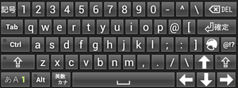

文字を入力できるエリアをタップすると、nicoWnnGソフトキーボードが表示されます。縦画面のときは縦画面用、横画面のときは横画面用のソフトキーボードが表示されます。
初期設定では、横画面ではPC用キーボードを模倣した「QWERTYキー」、縦画面では携帯電話用キーボードを模倣した「12キー」となっています。
|
入力画面（QWERTYキー） |
 入力画面（12キー） |
トグル・フリック・２タッチ
nicoWnnG IMEでは、12キー入力のとき、入力方法を「トグル」「フリック」「２タッチ」から選ぶことができます。
- トグル入力
-
トグル入力「トグル入力」は、「入力したい行のキーを複数回押す」ことによって、文字を入力する方式です。「あ」 [あ]を１回 「こ」 [か]を５回 「B」 英字モードに切り替え[A]を２回 すぐ覚えられるのが特長ですが、同じキーを連続して叩く必要があるために画面タッチ入力では回数が合わず間違った文字を入力しやすい欠点があります。 - フリック入力
-
フリック入力「フリック入力」は、「入力したい行のキーにタッチして」「そのまま指を離す、または滑らせる（フリックする）方向で文字を決定する」ことによって、文字を入力する方式です。「あ」 [あ]をタッチ、そのまま離す 「こ」 [か]をタッチ、下へ滑らせる 「B」 英字モードに切り替え[A]を左へ滑らせる １回の操作で文字が確定できるため高速に入力できるのが特長ですが、その複雑な操作を覚えにくいという欠点があります。 - ２タッチ入力
-
２タッチ入力（「あ」をタッチした後）「２タッチ入力」は、「入力したい行のキーにタッチしてから」「入力したい文字のキーにタッチして決定する」ことによって、文字を入力する方式です。「あ」 [あ]をタッチ、続いて表示される[あ]をタッチする 「こ」 [か]をタッチ、続いて表示される[こ]をタッチする 「B」 [あ]をタッチ、続いて表示される[B]をタッチする ２回の操作で文字が確定できるためトグル方式より操作数が少なく、また文字種キーを押す必要が大幅に減るのが特長ですが、キーボード表示が激しく変化するため覚えにくいという欠点があります。
|
他にも「ベル打ち」「ニコタッチ」などの入力方法がありますが、ここでは割愛します。
|
Shiftキー
- QWERTYキー
-
QWERTYキーのShiftモードQWERTYキーでは、キーボード左下端に[Shift]キー が表示されます。このキーを押すとシフトロック状態 になり、もう一度押してOFFにするまで「英文字の大文字化」や「記号キーの変更」、「かな文字の濁点／半濁点／小文字化」、「コピー・カット範囲の指定」などを行うことができます。
設定により、ロックしないシフト状態 にして、１文字入力すると自動的にシフトOFFにすることもできます。[Shift]キーの短押し／長押しで、シフト状態／シフトロック状態を打ち分けることができます。- 範囲指定
-
範囲指定[Shift]キーが押された状態でカーソルを移動すると、移動した範囲を「選択状態」にすることができます。この状態から、文字列のカットやコピーを行うことができます。範囲指定を行ったあと、[Alt]+[X]で文字列のカット、[Alt]+[C]で文字列のコピーを行うことができます。カット・コピーした文字列は、[Alt]+[V]で貼り付け（ペースト）することができます。
- 12キー
-
12キーのShiftモード12キーでは、キーボード左上端に[Shift]キー
 が表示されます。このキーを押すとシフトロック状態 になり、もう一度押してOFFにするまで「十字キーによるカーソル移動」や「カット＆ペースト」などを行うことができます。設定により、[Shift]キーを使わないこともできます。設定により、[Shift]キーを使わないこともできます。
が表示されます。このキーを押すとシフトロック状態 になり、もう一度押してOFFにするまで「十字キーによるカーソル移動」や「カット＆ペースト」などを行うことができます。設定により、[Shift]キーを使わないこともできます。設定により、[Shift]キーを使わないこともできます。- 範囲指定
-
範囲指定[Sel]キーがONの状態状態でカーソルを移動すると、移動した範囲を「選択状態」にすることができます。この状態から、文字列のカットやコピーを行うことができます。範囲指定を行ったあと、[Cut]で文字列のカット、[Copy]で文字列のコピーを行うことができます。カット・コピーした文字列は、[Paste]で貼り付け（ペースト）することができます。
矢印キー
矢印キー
ソフトキーボードの矢印キーは、タッチすると刻印の方向にカーソルが移動します。
また、矢印キーをフリックすると、フリックした方向にカーソルが移動します。この機能は、12キー入力モードがフリック入力でなくても使用でき、またQWERTYキー入力モードでも使用できます。
|
[Shift]キー がONの状態で矢印キーを入力すると、範囲選択を行うことができます。範囲選択した文字列は、カット・コピーの対象にすることができます。
|
文字種キー
キーボード左下端には、入力文字の種類を切り替える[文字種]キーが表示されてます。
- QWERTYキー（default）
-

QWERTYキーの英数字入力モード
（予測変換なし）QWERTYキー（default）では が表示され、押すことで「かな」→「英数字（予測変換あり）」→「英数字（予測変換なし）」と切り替わります。「予測変換あり」モードでは、英単語の先頭数文字を入力することで、辞書による予測変換入力を行うことができます。設定により、「英数字（予測変換あり）」や「英数字（予測変換なし）」を使わないようにすることができます。 - QWERTYキー（コンパクト・ミニ・ミニ横）
-

QWERTYキー（ミニ）の
英字入力モードQWERTYキー（コンパクト・ミニ・ミニ横）では が表示され、押すことで「かな」→「英字（予測変換あり）」→「数字・記号」と切り替わります。「英字（予測変換あり）」モードでは、英単語の先頭数文字を入力することで、辞書による予測変換入力を行うことができます。設定により、「英字（予測変換あり）」や「数字・記号」を使わないようにしたり、「英字入力モードで予測変換を使わない」ようにすることができます。 - 12キー
-
12キーの英字入力モードQWERTYキーでは が表示され、押すことで「かな」→「英字」→「数字」と切り替わります。
文字種ダイアログ

文字種ダイアログ
[文字種]キーを長押しすると、文字種ダイアログが表示されます。キーを押すことで、文字種を切り替えたり、その他の操作をすることができます。
|
[ひらがな]
[全角カタカナ]
[全角英字]
[全角数字]
[半角カタカナ]
[半角英字]
[半角数字]
|
それぞれの種類の文字を入力するモードになります。
|
|---|---|
|
[12キー]
 [QWERTYキー] [QWERTYキー] |
一時的にキーボードを変更します。
永続的にキーボードを変更したいときは、環境設定画面で行います。
|
|
[ヘルプ]
|
ヘルプを表示します。アプリ一覧から「nicoWnnG IME」を起動したときと同じ動作をします。
|
|
[設定]
|
環境設定画面を表示します。Androidシステム設定から[言語とキーボードの設定]-[nicoWnnGの設定]を選択したときと同じ動作をします。
|
変換キーと予測入力

「にゅう」で始まる単語の予測入力
かな文字による入力を行うと、キーボード上部（候補表示行）に入力したかな文字が表示されます。この状態で[変換]キー を押すと、かな文字を漢字などに変換することができます。
予測入力機能がONになっている場合は、[変換]キーを押さなくても、「入力したかな文字で始まる単語」が表示されます。
表示された候補にタッチすることで、その候補単語の入力が行われます。
- 次候補／前候補
-
現在選択されている候補は、橙色で表示されます。右の例では、[にゅう]が選択されています。この状態で矢印キーを押すと、橙色の項目を動かして候補を選ぶことができます。[変換]キー を押すと、次の候補を選ぶことができます。ただし、橙色の項目がない状態の予測変換候補が表示されていている状態で[変換]キーを押すと、「候補の選択」ではなく「かな漢字変換」となります。12キーで入力を行っているときは、[リバース]キー を押すと、前の候補を選ぶことができます。フルキーボードを使用しているときは、[スペース]キーで次候補、[Shift]+[スペース]キーで前候補を選ぶことができます。
- 単語の区切り位置の調整
-
漢字変換を行うとき、単語の区切り位置を変更したいことがあります。以下の例では、「にわにはにわ」と入力して変換したとき、「庭に埴輪」となってしまいました。
 [DEL]キーを押していったん変換前に戻したあと、[←]（矢印キーの左）を押すと、単語の一部のみ色が変わります。「にわには」までの色が変わったところで変換を行います。
[DEL]キーを押していったん変換前に戻したあと、[←]（矢印キーの左）を押すと、単語の一部のみ色が変わります。「にわには」までの色が変わったところで変換を行います。 今度は「庭には二羽」と変換することができました。設定により、変換中の左右矢印キーを「候補の選択」ではなく「単語の区切り位置の調整」にすることができます。また、[Shift]キーのあるキーボードを使っている場合は、[Shift]+[←][→]キーで単語の区切り位置を調整することができます。
今度は「庭には二羽」と変換することができました。設定により、変換中の左右矢印キーを「候補の選択」ではなく「単語の区切り位置の調整」にすることができます。また、[Shift]キーのあるキーボードを使っている場合は、[Shift]+[←][→]キーで単語の区切り位置を調整することができます。 - 英数・カタカナ変換
-
[変換]キーの代わりに[英数・カナ]キーを押すと、英数・カタカナへの変換を行うことができます。また、[変換]キーの代わりに[文字種]キーを押すと、直接カタカナへの変換を行うことができます。
- スクロール
候補表示行は、スワイプすることで左右にスクロールすることができます。
- 候補一覧表示
候補一覧表示候補表示行の右端には、 ボタンが表示されています。このボタンにタッチすると、すべての入力候補が全画面で表示され、単語を選ぶことができます。ボタンを表示していなくても、候補表示行を上にスワイプすることで、候補一覧表示にすることができます。
ボタンが表示されています。このボタンにタッチすると、すべての入力候補が全画面で表示され、単語を選ぶことができます。ボタンを表示していなくても、候補表示行を上にスワイプすることで、候補一覧表示にすることができます。- 学習削除
候補を長押しすると、その単語についての学習結果を削除することができます。学習結果を削除すると、その単語は「一度も変換を行ったことのない」状態になり、変換候補の先頭に現れなくなります。内蔵変換辞書やユーザー辞書に登録されている単語は、この機能による「削除」を行っても、辞書からその登録単語が削除されることはありません。
- 候補表示行の設定
候補表示行は、以下のような設定を行うことができます。- 候補表示の行数を１行～５行の間で変更することができます。
- 候補表示のフォントサイズを変更することができます。
- 候補表示行とキーボードの間に隙間をとるかどうかを指定することができます。
- 全候補表示ボタンを表示するかどうかを指定することができます。
記号キーとマッシュルーム
マッシュルームの選択[記号]キー を押すと、記号文字が候補表示行に表示されます。漢字変換と同様に、候補にタッチすることで記号を入力することができます。
[マッシュルーム]キー を押すか、[記号/マッシュルーム]キー を長押しすると、「マッシュルーム」と呼ばれるプラグインを選択するダイアログが表示されます。プラグインを選択すると、そのプラグインを利用した文字入力を行うことができます。
マッシュルームは「IMEの入力機能を補うためのプラグイン」です。オリジナルは「Simeji」で策定されたものですが、仕様が公開されているため多くの方によるプラグインが作成されており、またこれらのプラグインを使用できるIMEも多数作成されています。「Simeji」については、以下をご覧ください。また、マッシュルームの多くは、Android Marketでダウンロードすることができます。
ユーザーシンボルキー
ユーザーシンボルキーで数字入力[@!?]キー
 を押すと、ユーザーが自由に登録可能な文字列が候補表示行に表示されます。漢字変換と同様に、候補にタッチすることで文字列を入力することができます。
を押すと、ユーザーが自由に登録可能な文字列が候補表示行に表示されます。漢字変換と同様に、候補にタッチすることで文字列を入力することができます。ユーザーシンボルキーの登録内容は、フォルダ「/mnt/sdcard/nicoWnnG/」に「usersymbol_*.xml」として記録されています。
※ ユーザーシンボルキー登録を編集するプラグインは、今後提供予定です。
ユーザーシンボルキーの登録内容を変更したあとは、[設定]-[[@!?]キー登録再読み込み]を選ぶことで、再読み込みを行うことができます。
また、ユーザーシンボルキーの登録内容を初期化したいときは、[設定]-[[@!?]キー登録内容初期化]を選びます。